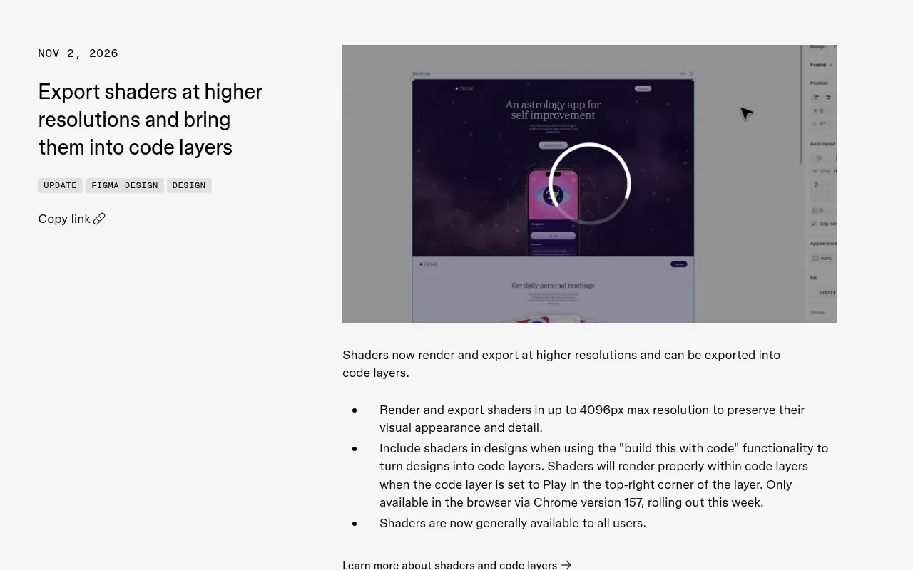
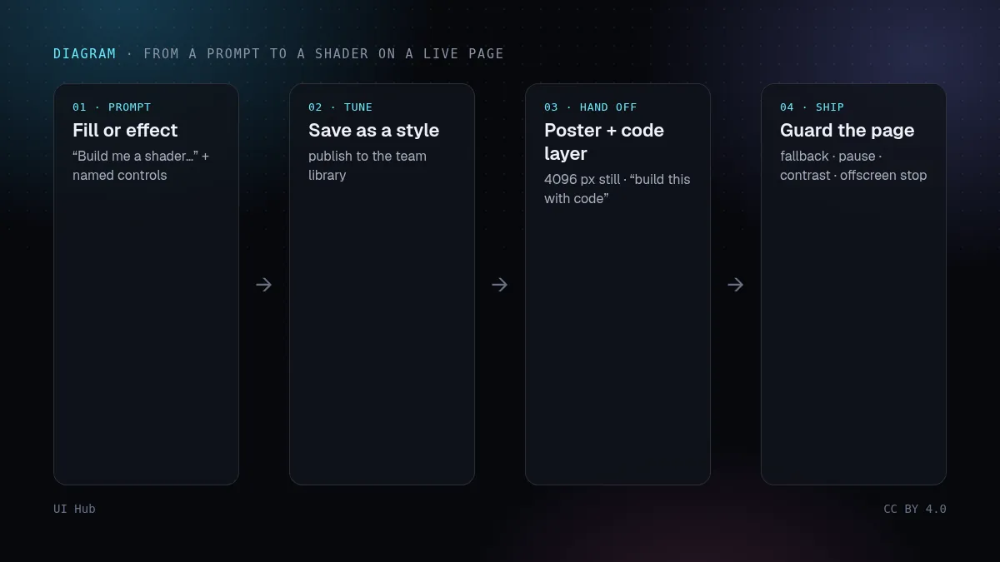
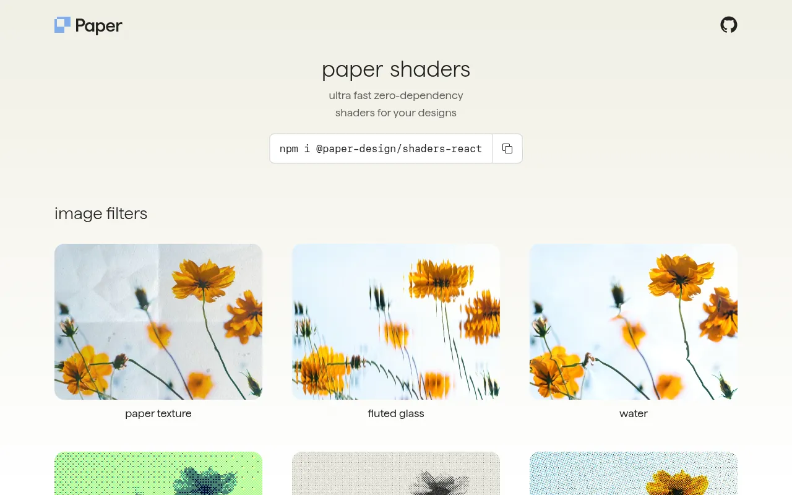

11 月 2 日，Figma 发布了一条篇幅很短、影响却不小的更新：着色器（shader）现已向所有用户正式开放，渲染和导出分辨率最高可达 4096 像素，并且在用「build this with code」把设计转换为代码图层时，可以把着色器一起带进去。在代码图层里，把图层设为 Play 后着色器就会运行。Figma 表示这一部分需要在浏览器中使用 Chrome 157，本周陆续上线。一周前的 10 月 27 日，着色器还加入了版本历史，每个版本都有一段由智能体写的说明。

把这些放在一起看，着色器不再是一个在交付时被压成静态 PNG 或循环 MP4 的画布技巧，它可以一直保持为代码。在 X 上回复 Figma 公告的设计师们注意到的正是这一点，其中一位提出了目前还没人回答的问题：着色器进入代码后还能继续编辑吗，还是会被拍平？在围绕它做规划之前，值得先自己测一下。

改了三件事：全面开放、4096 像素的导出上限、进入代码图层的路径。更高的导出分辨率比听起来更重要，因为一张清晰的静帧正是实时着色器需要的备用图。进入代码图层的路径之所以重要，是因为这是 Figma 着色器第一次有官方途径变成可运行的代码，而不是一段视频。
也有没变的。在画布上，每个页面同一时间只能播放一个动画或交互着色器。代码图层仍是公开测试版，付费方案上生成代码图层只免费到 11 月 4 日，之后会像其他智能体功能一样消耗 AI 额度。另外，代码图层是画布上的原型，不是你的生产技术栈，应把它当作给工程师的可运行参考，而不是最终组件。
着色器大概是设计工具能交给开发者的最「炫」的东西，而这正是风险所在。让它们抢眼的那些特性，也正是会把页面弄坏的特性：它们在文字后面动，每一帧亮度都在变，而且无论有没有人在看，都让 GPU 一直忙着。一个在 Figma 画框里看起来没问题的着色器，可能在最亮的那一帧对比度不达标，可能耗光手机电量，也可能给一位在系统里开启了「减少动态效果」的读者播放全屏循环动画。
所以，要把着色器当成附带规则的设计 Token，而不是一张图片。决定它允许出现在哪里（首屏背景和插图，而不是正文后面）、最亮可以到多少、能不能动，以及它无法运行时用什么替代。如果你不经过 Figma、直接写着色器代码，Paper Shaders 这类小型库（面向 React 和原生 JavaScript 的零依赖 WebGL 着色器，Apache-2.0 许可，截至 11 月 2 日的一周 npm 下载约 130 万次）会让这件事变得简单，但它的文档要求锁定确切版本，因为 0.0.x 版本之间仍会有破坏性变更。
prefers-reduced-motion: reduce 下显示海报图，或把速度设为零。package.json 里锁定着色器库的确切版本，并记下代码对应的是哪个版本的 Figma 样式。shader-spec.md（着色器规格）
名称： hero-glow（Figma 样式 v3）
位置： 只用于首屏背景，绝不放在正文后面
控件： 强度 0–1 · 速度 0–0.4 · 色相锁定为品牌色
海报图： hero-glow@4096.webp（首屏画面、分享图、减少动态效果）
对比度： 标题和按钮在最亮帧 ≥ 4.5:1 · 遮罩 40%
动效： 暂停按钮 · 离开视口和标签页隐藏时停止
预算： 每屏 1 个实时画布
代码图层本身的工作流程，请看 Figma 代码图层与 Specs。恰到好处的动效里的规则同样适用于着色器，OKLCH 色彩与深色模式能帮你让着色器在深浅两种主题下都留在品牌色板之内。上线前，用 AI 生成界面的无障碍检查过一遍；如果你更想直接写代码实现效果，可以在 2026 年最值得用的 React 动效组件库里比较选择。